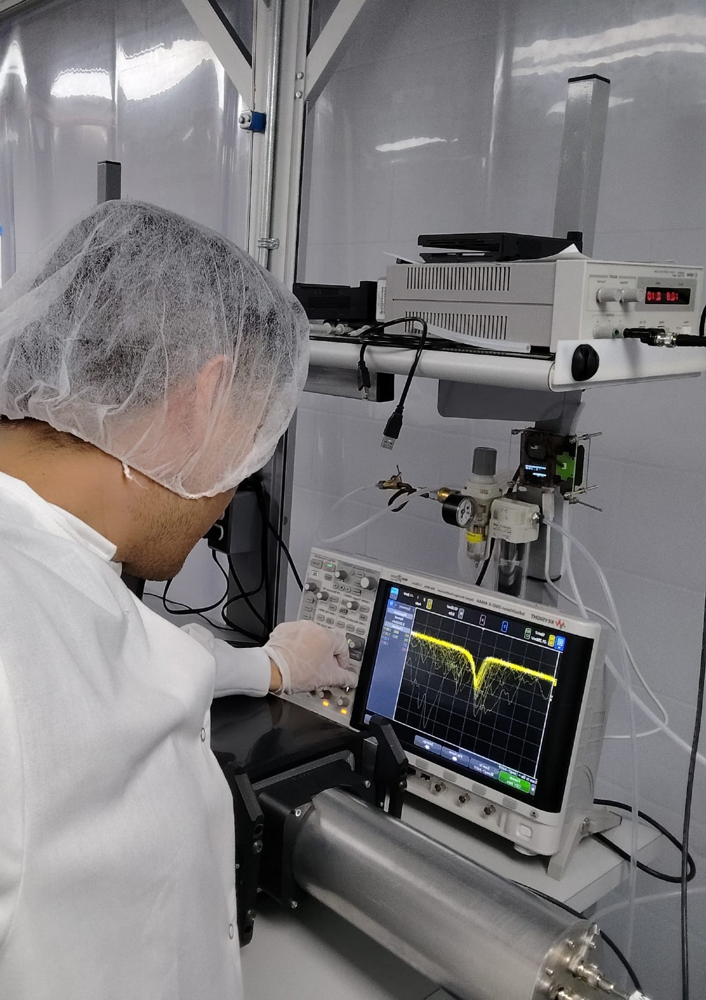
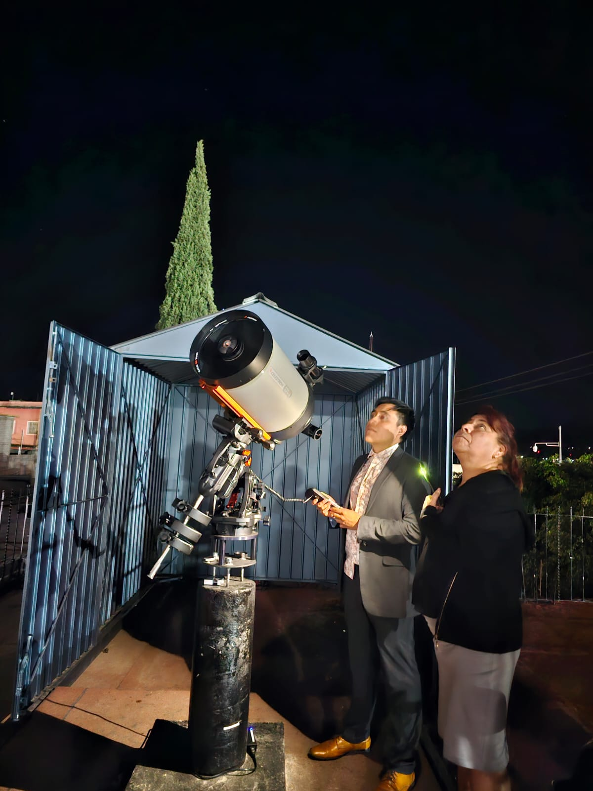
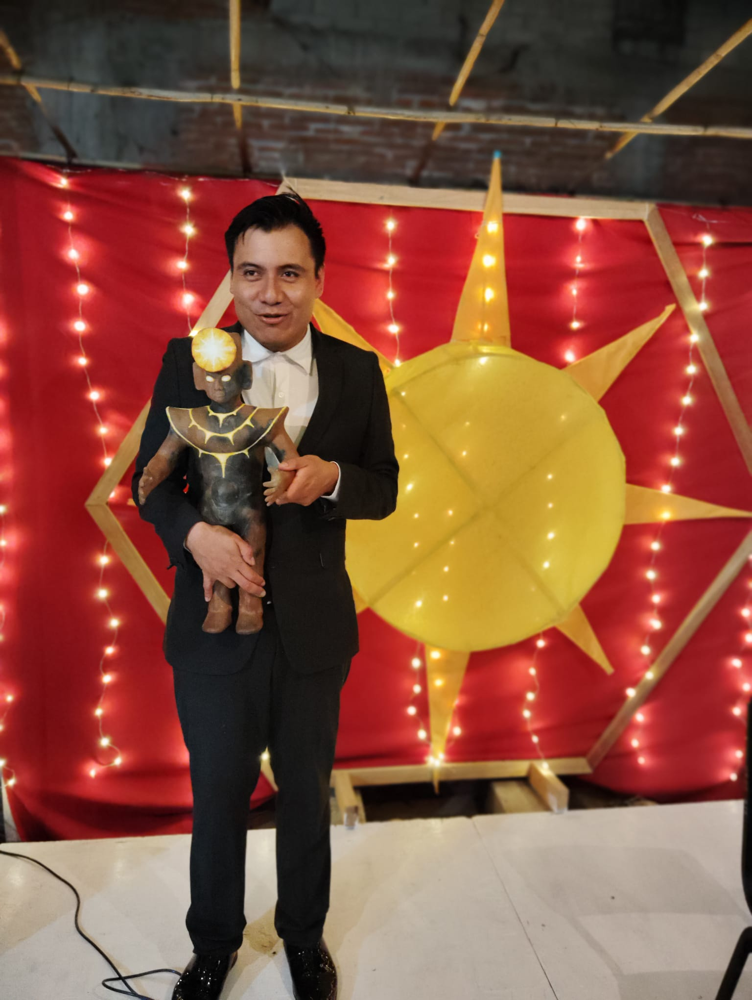
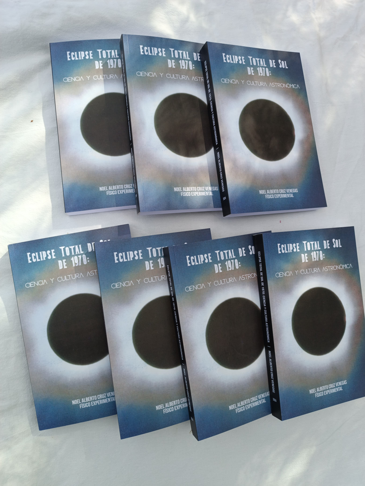
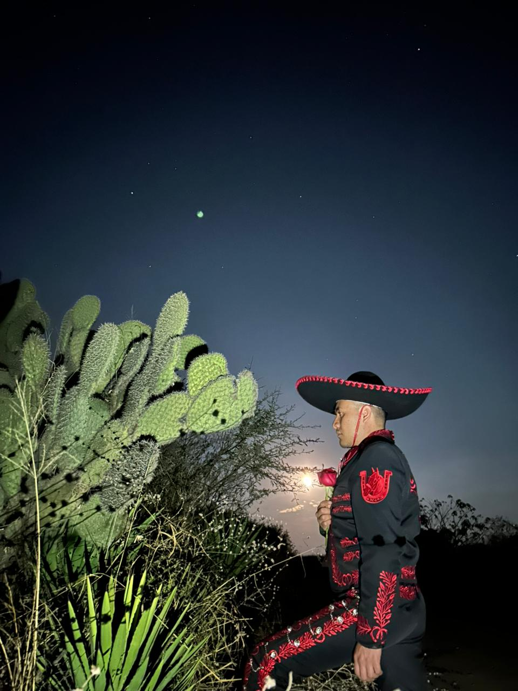

Intro
Noel Alberto Cruz Venegas was born in a small village near the Xitla Mountains (Mountain of Stars in Zapotec, an Indigenous language), in Monjas, Oaxaca, Mexico. He grew up in a farming family, where an academic career was not the expected path. Watching the night sky from his hometown convinced him to devote his life to physics.
He is an experimental physicist working on detector instrumentation, radiation sensors, and scientific data analysis for astronomy, particle, and astroparticle physics.
Since 2022 he has directed the Mbal Astronomical Observatory in southern Oaxaca. Alongside his scientific work, he is a Latin dance instructor and performer, specializing in salsa, bachata, and Mexican folklore.
Research

Detector Physics for the MOLLER Experiment
Sept 2022 - present. PhD research under Prof. Michael Gericke, University of Manitoba.
- Construction of Cherenkov quartz-tile air-core detectors for precision parity-violation measurements.
- Characterization of approximately 210 photomultiplier tubes (PMTs) in event and integration modes, using 3-stage and 4-stage gain configurations.
- Development of data visualization and detector response analysis tools for PMT selection and detector optimization.
- Studies of detector response uniformity, gain stability, and systematic response equalization for the MOLLER integrating detector.
- Assembly and design of the mechanical, electrical, and electronic systems of a pair of commercial Gas Electron Multipliers (GEMs).
- Commissioning and testing of the optimal operating parameters for the pair of GEMs.
- Development of analysis code for the GEMs to validate X-ray and muon data.
Multimessenger Astronomy of Jupiter, the Sun, and the Milky Way
2022 - ongoing. Mbal Astronomical Observatory.
- Design of radio telescope antenna orientations and calculation of the best observing sessions for Jupiter's radio emissions, the Sun, and the Milky Way radio background.
- Study of ionospheric reflection variation during the October 14th, 2023 solar eclipse, using the superSID space-weather station from the Stanford Solar Physics Center.
- Detection of the X2.8 solar flare in active region 13514 on December 14th, 2023, using NASA's Radio JOVE Project and superSID radio telescopes.
- Study of the April 8th, 2024 solar eclipse, using a superSID radio telescope and a 40 mm H-alpha solar telescope.
- Commissioning of an 11-inch flat-field Schmidt-Cassegrain telescope for observation of the Moon, the Sun, the planets, and deep-sky objects.
Superheated Liquid Particle Detectors (PICO-40L)
August 2018 - June 2021. MSc research under Dr. Carsten Krauss and Dr. Marie Cecile Piro, University of Alberta.
- Designed and built a Pressure Control Unit (hydraulic cart) for a small compressionless bubble chamber.
- Created a LabVIEW interface for monitoring and controlling the pressure and temperature parameters of the detector.
- Defined the physics program of a new continuous compressionless bubble chamber, using GEANT4 simulations and ROOT analysis.
MSc Thesis: Study of the Response of a New Continuous Compressionless Bubble Chamber (2021).
The PICO-60 Bubble Chamber for WIMP Dark Matter Detection
February 2016 - February 2018. Dr. Eric Vazquez Jauregui, Institute of Physics, UNAM.
- GEANT4 simulation of neutron backgrounds for the PICO-60 detector.
- Created a CAD-to-GEANT4 geometry converter to improve the PICO camera engineering design based on the neutron background budget.
- Developed a machine learning framework for particle identification for the PICO project.
BSc Thesis: Monte Carlo Simulation of Neutron Transport in the PICO-60 Dark Matter Detector (2017).
Earlier Research Experiences
-
Large Millimeter Telescope Alfonso Serrano (GTM), 2017. Dr. Alfredo Montaña and Dr. Jorge Zavala, National Institute of Astrophysics, Optics and Electronics (INAOE). Studied star formation efficiency in the radiogalaxy NGP.MF.203484, to test a universal law of star formation in the early Universe.
-
PROSPECT reactor neutrino experiment, 2016. Dr. Alfredo Galindo Uribarri, Oak Ridge National Laboratory, Physics Division. Contributed to the Monte Carlo of the NaI(Tl) detectors at the High Flux Isotope Reactor (HFIR), and designed a NIM electronics module for the NaI(Tl) data-acquisition temperature system.
-
BaBar experiment, 2015. Dr. Robert Kowalewski, University of Victoria Subatomic Physics Department and Accelerator Research Centre, SLAC. Measured the efficiency of Monte Carlo pion reconstruction in B meson decays to D0 and D*0 final states, for studies of CP symmetry violation and new physics.
-
Latin American Giant Observatory (LAGO), 2014. Dr. Ibrahim Torres, INAOE. Optimized the optical properties of a Cherenkov tank in GEANT4 simulations, for gamma-ray burst studies.
Publications
Peer-Reviewed Articles
-
PICO Collaboration, "Developing a Bubble Chamber Particle Discriminator Using Semi-Supervised Learning," arXiv:1811.11308. arxiv.org/abs/1811.11308
-
PICO Collaboration, "Velocity Independent Constraints on Spin-Dependent DM-Nucleon Interactions from IceCube and PICO," arXiv:1907.12509. arxiv.org/abs/1907.12509
-
PICO Collaboration, "Data-Driven Modeling of Electron Recoil Nucleation in PICO C3F8 Bubble Chambers," Physical Review D 100, 082006 (2019). journals.aps.org/prd/abstract/10.1103/PhysRevD.100.082006
-
PICO Collaboration, "Dark Matter Search Results from the Complete Exposure of the PICO-60 C3F8 Bubble Chamber," Physical Review D 100, 022001 (2019). journals.aps.org/prd/abstract/10.1103/PhysRevD.100.022001
Manuscripts in Preparation
-
Astronomical Observatory Mbal, "Three Minutes 28 Seconds of Darkness: When the South of Mexico Became in 1970 the World's Biggest Solar Observatory," to be submitted to the Journal for the History of Astronomy.
-
Astronomical Observatory Mbal, "Study of Sudden Ionospheric Disturbances and Radio Signals Induced by Solar Flares, 2023 and 2024 Solar Eclipses, and Jupiter from the Astronomical Observatory Mbal," to be submitted to the Journal of Geophysical Research / Journal of Atmospheric and Solar-Terrestrial Physics.
Translations
-
Menzel and Pasachoff, "Solar Eclipse: Nature's Super Spectacular," National Geographic (August 1970), Spanish translation by Noel Alberto Cruz Venegas.

The Mbal Astronomical Observatory (meaning "star" in Zapotec) is located in the city of Miahuatlán de Porfirio Díaz, Oaxaca, Mexico (16° 19′ 42″ N, 96° 35′ 48″ W). It operates as a research and teaching center for astronomy and space sciences in the Sierra Sur of Oaxaca.
Founded in 2023 as the Pelopenitza Radio Observatory (Pelopenitza being the Zapotec name for Miahuatlán), it adopted its current name on October 5, 2024, the day its main telescope, XNITITH ("distant light" in Zapotec), saw first light. The observatory's logo is inspired by the total solar eclipse of March 7, 1970, while its typography evokes the deep heritage of Zapotec astronomy. All of the observatory's telescopes carry Zapotec names, as a tribute to the cosmovision and to the respect for the cycles of the sky that this culture has developed from ancient times to the present day.
Equipped with a deep-space telescope, H-alpha and white-light telescopes, and complementary technology for radio astronomy of the Sun, the Solar System, the Milky Way, and extragalactic objects, the Mbal Observatory, through its multiwavelength studies, is positioned to become the most complete of Mexico's municipal observatories.
Honors and Awards

Honours
Highest Youth Honor · Mexican Honors System · 2018
Youth Prize for Academic Achievement
Oaxaca State Government and Youth Institute of Oaxaca (INJEO)
Targeted to young people whose dedication to work or studies inspires enthusiasm and admiration among their peers, and who are an example of self-motivation and progress in their community. The academic category recognizes exemplary trajectories in research and outreach, scientific work, technological innovation, books and research publications, conferences given, scientific exchanges, and academic distinctions, as well as contributions to teaching and learning beyond formal teaching responsibilities.
-
2024 - Distinguished Guest. Festivities and Activities of the October Celebrations honoring the Battle of October 3, 1866, City of Miahuatlán, Oaxaca. Honor table during the protocol activities.
-
2024 - Guest of Honor. Civil Act commemorating the 54th anniversary of the 1970 Total Solar Eclipse, organized by the Government of Miahuatlán, Oaxaca.
-
2024 - Naming Honor. A formal recognition in which a generation of students carries the name of a citizen, reflecting the values or achievements the institution aims to promote. Kindergarten Guillermo Rojas Mijangos (Cohort 2021-2024).
-
2022 - Guest of Honor. Commencement Ceremony of Elementary School Guillermo Rojas Mijangos.
-
2020 - Distinguished Alumni Award. Recognizes outstanding graduates for their achievements after leaving an educational institution, awarded at the 20th Anniversary of the COBAO 27 foundation (high school).
Awards
-
2018 - Winner of competition, Oaxaca State Council of Science, Technology and Innovation (COCITEI). Prize: one telescope.
-
2015 - Competition of placement for undergraduate research stays at CERN (Switzerland), DESY (Germany), Fermilab (USA), and SNOLAB (Canada). Pre-selected by the Division of Particles and Fields of the Mexican Physical Society (DPC-SMF).
-
2011 - Best Student High School Award, Oaxaca State High School, Miahuatlán campus.
-
2009 - 2010 - Science Workshop for the Youth, for high school students interested in pursuing STEM careers (overall acceptance: 5%). Hosted by the National Astronomical Observatory of Mexico (OAN), CICESE, CNyN-UNAM and UABC in Ensenada, Baja California; CIMAT and CINVESTAV-Irapuato in Guanajuato; ICN-UNAM, ECOSUR, and Centro de Formación Moxviquil in San Cristóbal, Chiapas.
Grants and Fellowships
-
2022 - 2024 - Mbal Astronomical Observatory Grant, Miahuatlán Government and Council for Education. CAD 16,000. Purchase of astronomy equipment in the USA, and operation and management of the scientific facility.
-
2023 - Pelopenitza Radio Observatory in Mexico (PRO-MX) Grant, Miahuatlán Government and Council for Education. CAD 3,400. Purchase and design of antennas and radio receivers for radio astronomy.
-
2024 - WNPPC Graduate Student Travel Award, Canadian Institute of Nuclear Physics (CINP). CAD 750.
-
2018 - The Globalink Graduate Fellowship, Mitacs Globalink. USD 15,000.
-
2016 - Nuclear Summer 2016 and University of Tennessee Summer Research Program, Nuclear Physics Division of the Mexican Physical Society and the University of Tennessee. USD 920 + USD 5,480.
-
2016 - XXVI Summer Research Internship and Scholarship, Secretariat of Public Education (SEP) of the Mexican Government and Mexican Academy of Sciences. USD 345. Declined.
-
2015 - Mitacs Globalink Research Internship, Mitacs Globalink Inc. and SEP. USD 5,050.
-
2015 - Financial support for plane ticket, Municipal Council of Monjas, Miahuatlán, Oaxaca. USD 81.
-
2014 - XXV Summer Research Internship, Mexican Academy of Sciences and SEP. USD 345.
Scholarships
- Sept 2022 - Apr 2023 International Graduate Student Entrance Scholarship, University of Manitoba (international entrance funding).
- Aug 2016 - Dec 2017 Support Program for Research and Technological Innovation Projects, UNAM. Scholarship supervised by Dr. Eric Vázquez Jáuregui, for dark matter searches with the PICO and DEAP experiments.
- Aug 2015 - Jan 2016 Food Scholarship, Faculty of Sciences, UNAM, UNAM Foundation, Carlos Slim Foundation, and FUNAM.
- Sep 2014 - Aug 2015 National Scholarship Program for Higher Education 2014-2015 (living expenses), UNAM, SEP, and FUNAM.
- Aug 2012 - Dec 2014 Food Scholarship, Faculty of Sciences, UNAM, UNAM Foundation, Carlos Slim Foundation, and FUNAM.
- Sep 2011 - Aug 2012 National Scholarship Program and Funding 2011-2012, UNAM, SEP, and FUNAM.

The total solar eclipse of March 7, 1970 crossed southern Mexico and is regarded as the most comprehensive scientific study of a solar eclipse in human history. Close to five hundred astronomers and scientists from fourteen countries installed instruments in Oaxacan villages, supported by more than 70 NASA rocket probes, 7 satellites, and an aircraft. Since 2020, Noel has been studying, documenting, and sharing this legacy.
Books, Chapters, and Manuscripts
-
Total Solar Eclipse of 1970: Science and Astronomical Culture (2024, Spanish edition, ISBN 978-1-7382980-0-6). Legal deposit record, Library and Archives Canada. Presented at the Miahuatlán Auditorium, the Solarium Art Festival, and the National Institute of Astrophysics, Optics and Electronics (INAOE).
-
Invited chapter, "Astronomy in Oaxaca Before, During, and After the Nundehui Planetarium" (2026), in Nundehui Planetarium: Land of the Sky, covering the eclipse's impact on the development of astronomy in Oaxaca.
-
Manuscript in preparation: "Three Minutes 28 Seconds of Darkness: When the South of Mexico Became the World's Largest Solar Observatory in 1970," for the Journal for the History of Astronomy.
Anniversary Conferences and Events
- 2026 56th anniversary: chair of conferences and planning of solar spectroscopy measurements, Miahuatlán.
- 2025 55th anniversary: chair of conferences, Miahuatlán.
- 2024 54th anniversary: chair of conferences, and Guest of Honor at the civic act commemorating the eclipse, Miahuatlán.
- 2023 53rd anniversary: chair of the workshop on Mexican radio astronomy, Miahuatlán. Watch the video
- 2020 50th anniversary: chair of public astronomical observations and conferences. Watch the video
Talks, Interviews, and Media
- 2026 "The World's Best Photograph of the Solar Corona: San Pedro Mártir Quiechapa During the 1970 Eclipse," Quiechapa en el tiempo (public talk). Facebook
- 2026 "When the Moon Darkened the Oaxacan Coast: Science and Memory of the 1970 Eclipse," Radio Pacífico (radio) and Casa Tilcoatle (public talk). Facebook
- 2024 "Cultural and Astronomical Heritage of the Most Studied Lunar Shadow in Human History," Opción Ciudadana Puebla (online talk). Facebook
- 2024 "Tamazulapam and the 1970 Solar Eclipse," Tamazulapam municipality (public talk).
- 2024 "What Happened on March 7, 1970? Solar Eclipse of Miahuatlán," Estamos al Aire (TV); book presentation interview, Disyuntiva TV (TV).
- 2024 Film discussions: "Eclipse 1970, the Scientific Research at the UNAM" (Ratigovicha) and "Shadow Across the Sun: High Altitude Observatory Expedition to Oaxaca."
- 2023 "What You Did Not Know but Were Afraid to Ask About the 1970 Solar Eclipse" (public talk).
- 2021 "Sociocultural Impact of the 1970 Solar Eclipse," Astronomy Society of Oaxaca; "The Historical and Cultural Legacy of the Miahuatlán 1970 Solar Eclipse," Eclipses México lecture series.
Translations and Film Work
- Spanish translation of Menzel and Pasachoff, "Solar Eclipse: Nature's Super Spectacular," National Geographic (1970).
- Spanish translation and subtitling of Eclipse 1970, the Scientific Research at the UNAM, UNAM Film Archive (2024-2025), translated from Russian, French, and English.
- Spanish translation of Watson and Newkirk, "HAO's 1970 Eclipse Expedition, or Six Weeks on the Mountain of Eternal Clouds," NSF NCAR Archives (2023).
- Spanish translation of Shadows Across the Sun, documenting the High Altitude Observatory expedition to Oaxaca, NSF NCAR Archives (2023).
Eclipse Research at the Mbal Observatory
- Study of the ionospheric reflection variation during the October 14, 2023 solar eclipse, using a superSID space-weather station from the Stanford Solar Physics Center.
- Study of the April 8, 2024 solar eclipse, using a superSID radio telescope and a 40 mm H-alpha solar telescope.
- Manuscript in preparation: "Study of Sudden Ionospheric Disturbances and Radio Signals Induced by Solar Flares, 2023 and 2024 Solar Eclipses, and Jupiter from the Astronomical Observatory Mbal."
Art

Latin dance instructor and performer, specializing in salsa, bachata, and Mexican folklore. Classes and workshops are taught in Spanish and English.
Dance Styles
- Salsa: Los Angeles and New York styles.
- Bachata: Dominican, sensual, and modern.
- Other Latin styles: merengue, danzón, bolero, cha-cha-chá, mambo, guaguancó, Cuban son, and others.
- Mexican folklore: regional son from Jalisco, Veracruz, and Oaxaca.
Teaching Experience
Most Recent: Salsa Course, University of Manitoba Sport & Recreation
Step into the exciting world of salsa through the rhythms of African-rooted percussion, the groove of the bass and guitars, the playfulness of the piano, and the improvisation of the jazz-inspired brass section. Discover movement instead of memorizing steps as you learn to dance with the music. With an emphasis on social dancing, you will develop a strong foundation of salsa vocabulary, coordination, partner connection, musicality, and the confidence to enjoy any dance floor. Sabor! Fuego! Agua!
Instructor: Noel Alberto Cruz Venegas.
View a class sample |
Course listings, University of Manitoba
Previous Courses and Workshops
- Latin Dance for Parties (Fall 2025), University of Manitoba, Faculty of Kinesiology and Recreation Management. A course introducing the music and dance of Latin America and the Caribbean, focused on social rhythms such as salsa, bachata, and merengue.
- Romantic Salsa (Fall 2025), University of Manitoba. Introductory salsa lessons for absolute beginners, with an emphasis on connection, musicality, and romantic expression, adapted to diverse learning styles and physical abilities.
- Bachata (Fall 2024, Winter 2024, Winter 2025), University of Manitoba. Foundational bachata classes for absolute beginners.
- Dance Through History (January 2024), invited seminar, University of Manitoba. Lectures on the cultural history, musical structure, and foundational techniques of bachata for Bachelor of Kinesiology students.
- Bachata Fundamentals (Winter 2023), Pura Vida Dance Studio, Winnipeg. Introductory bachata lessons covering instrumentation, song structure, dance theory, and lead-follow technique.
- Introduction to Latin Rhythms (2022), Oaxaca, Mexico. Salsa, bachata, and merengue classes for international volunteers, taught in English, with Spanish language learning integrated through music and dance.
Training
- Salsa and Bachata University (2021 - 2022), Mexico. Bachata Teaching Certificate, more than 500 hours of classes covering Latin dance history, music applied to dance, bachata technique, Graham and Limón techniques, movement and improvisation, educational psychology, and didactics of bachata.
- Talento Latino Salamanca (2019 - 2020), Mexico. Intensive Latin training in salsa, bachata, and urban and ballet techniques applied to Latin dance, including Colombian salsa and Afrocotempo.
- Fadi Fusion (2020). Afrosalsa, improvisation, mambo, and style fusion.
- Vladimir Pineda (2019). Workshop on a glossary of 48 salsa steps.
- Salsa in the Park (2017 - 2018), Bryan Mondragón. Introduction to Los Angeles style salsa.
Performance Experience
- Bachata Rosa, Juan Luis Guerra show (August 13, 2023), The Park Theatre, Winnipeg. Invited on stage to improvise a couple's routine with a partner chosen from the audience.
- Salsa On2 with Salsa with the Stars (January 2019 - February 2020), ETOWN Dance Company, Edmonton, Alberta. Member of the semi-professional salsa performance team, assisting with lead-follow instruction for amateur dancers.
- Mexican hat dance (Jarabe Tapatío) (June - August 2015), Fiesta Latina Folklore Dancers, Victoria, British Columbia. Performed in a theatrical celebration of Mexican Independence Day.
Choreographies Learned
- "Descarga Cubana" by Cachao, choreographed by Mauricio Zaleta (Open Break Dance Company).
- "Bembé" by Maykel Blanco y su Salsa Mayor, and "Aguzate" by Richie Ray and Bobby Cruz, choreographed by Fadi Fusion.
- "Si Esta Casa Hablara" by Joel Santos, choreographed by Cristian Bernabé.
- "Let's Boogaloo" by Willie Rosario and "Tremendo Rumbón" by Joe Cuba, choreographed by Rodrigo Cortazar.
- "Yo Sé Quién Tú Eres" by Orquesta La Grande, choreographed by Tito Ortos and Yasbek Cervantes.
- "Mambo y Pachanga" by Willie Salcedo, choreographed by Vladimir Pineda.
Training With
- Gaby Equiz, director of Alma Latina.
- Dr. María Penélope Vargas Estrada, Afro-Caribbean and African American dance.
- Eduardo González, music teacher at the National School of Classical and Contemporary Dance (INBA, Mexico).
- Jorge Martínez, 2016 World Latin Dance Cup Salsa On2 champion.
- Luis Ernesto López, first place in cha-cha-chá, World Latin Dance Cup 2011.
- Fadi Fusion, world champion of free steps (La Negra salsa).
- Open Break, World Salsa Summit 2019 Pro Open Men Team champions.
- Helios Vargas, first place in shines, Latin Project.
Dance Congresses
Mexico (Mexico City, Puebla, and Oaxaca), the United States (Tennessee and Georgia), and Canada (Vancouver, Edmonton, Toronto, and Winnipeg).
Contact
You can reach me by email: nacruzvene@gmail.com